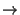

Next: 3 Step-by-Step Installation Up: 1 导论 Previous: 1 导引 Contents Index
``A journey of a thousand miles must begin with a single step.'' - 老子现在你已经读过有关 Linux 和 Debian 的理念与哲学，现在是时候把它搬上你的计算机上了！我们会首先讲及怎样准备安装 Debian，然后是怎样分割硬盘，最后是怎样开始安装系统。
Debian 没有强迫硬件要求虽要超越 Linux 内核及 GNU 工具。
这个章节包含慨括性资料和找到附加资料的指标而不是尝试形容所有被 PC 平台支持的不同硬件设定。
这里有两个一流的地方去查询更详细的资料：Debian 系统需求 列表和 Linux 文档计划的硬件兼容性 HOWTO (Hardware Compatibility HOWTO) 。至于显示卡的支持，你可以观看 XFree86 计划的网站。
你需要最少 4MB 的内存和 35MB 可用的硬盘空位。如果你想安装适量的软件，包括 X 窗口系统，和一些开发用的程序以及函式库，你需要最少 300MB。而一个完整的安装则需大约 800MB。要安装所有在 Debian 里的东西，你大概需要 2GB。事实上，安装所有的东西是没有意义的，因为有些软件包提供相同的功用。
在你开始前，请先确定你已经备份好所有系统上的文件。安装过程可能会去除所有在硬盘上的资料！安装过程中使用的程序都是很可靠的，而且大部份都已经用了很多年，但一个错误的决择所换来的代价可不少呢。就算在备份过后，请小心地想好你要回答的问题及行动。两分钟的思考将会节省数以小时的无谓工作。
Debian 允许你同时安装及拥有 Debian GNU/Linux 和其它操作系统在相同的计算机上。如果你计划使用这个选项，请确定在你手上已拥有其它已安装的操作系统的光盘或磁盘。如果你重新分配启动硬盘机的分割区，你可能需要重新安装你已有的操作系统启动载入器![[*]](footnote.png) 或者整套操作系统。
或者整套操作系统。
如果你的计算机是二十四小时连接上网络（乙太网或相似的本地网络连接──不是 PPP 拨号连接），你应该询问你的网络的 管理员以下的资料：
![[*]](crossref.png) 页的第 11.1 节会有关于在 Debian 下设定 PPP 拨号连接的资讯。
页的第 11.1 节会有关于在 Debian 下设定 PPP 拨号连接的资讯。
在你安装 Debian 之前，最好请先计划一下怎样安排你的硬盘内的资料。这一部份的过程涉及在你的硬盘上建立分割区。
分割你的硬盘就是简单地指在你的硬盘上分柝开几个部份的动作。每个部份之间是独立及没有关系的。这动作大概就像在屋中筑起墙子；之后，在房间内加入家具便不影响其它房间一样。
如果你在你的系统内已经拥有一个操作系统（Windows 95, Windows NT, DOS 等）而你亦想把 Debian GNU/Linux 安装在同一只硬盘上，你便需要再重新分配硬盘分割区。概括来说，在一个已建立文件系统的分割区上作出改变是会破坏所有在该文件系统内资料。所以你应该在你重新分配硬盘分割区之前做好备份。如用屋的比喻，就是你大概会在你移动墙子之前先搬出所有家具去避免移动墙子时做成破坏家具的危险。幸运地这里有一个另外的方法给某些使用者使用；详细资料请看在第 页的第 2.3.6 节。
在最低限度，GNU/Linux 自已虽要一个分割区。你可以在一个分割区内装有操作系统，应用程序和你的私人文件。但是，大多数人都会选择给 GNU/Linux 多过最少数目的分割区去使用。主要有两个原因去解释为什么要将文件系统去分成数个分割区。第一个原因是为了安全。如果有什么损坏文件系统的事情发生，只会影响一个分割区。所以，你只需要去替换（由你小心保存好的备份）那一部份的系统。最少限度，你应该考虑建立被称为“根分割区”。这个分割区包含系统上最紧要的元件。就算其它的分割区损坏，你仍然可以启动进入 GNU/Linux 去修复系统。这样可以使你免于重新安装系统的麻烦。
第二个原因对于商业应用较为重要，但这项也要取决于你怎样使用系统。假设有什么失控情况和开始蚀掉硬盘空间。如是程序引致拥有根权限的问题（系统保留一定数量百份比的室间），你可能会发觉没有足够的硬盘空间。这并不是一个好的情况，因为操作系统虽要使用硬盘（除了交换空间）来工作。这个可能不是一个在本地区所发生的问题。例如，多馀的电子邮件 (``spam'') 可以轻易地填满一个分割区。透过使用多个分割区，你可以保护很多系统上的问题。再次使用电子邮件的例子，把 /var/spool/mail 放在独立的分割区，就算多馀的电子邮件填满了整个分割区，大部分系统都会继续工作。
另外一个原因只会发生在你拥有一个大型的 IDE 硬盘机但又没有使用LBA 定址或者驱动程序。在这个情况，你需要把根分割区放进首 1,024 磁柱内，通常大概在 524 megabytes。关于详细资料请看在第 页的第 2.3.3 节。
很多人都应为交换分割区是必须的，虽然这不是硬性规定。“交换分割区”是一堆操作系统使用的空间，作用是允许系统使用硬盘机储存为有别于普通内存的“虚拟内存”。把交换区放在分开的分割区容许 Linux 在使用时更有效率。要强迫 Linux 使用单一文件为交换区是可行的，但不建议这样做。
唯一使用多点分割区的真实缺点是通常很难预计实际需要。若果你把分割区设定得太少，你可能虽要重新安装系统或者你需要时常搬动资料去在细小的分割区上获得空间。反过来说，如果你把分割区设定得太大，你可能会浪费一些在其它地方用得着的空间。
你选择的安装种类将会影响需要的硬盘空间和你的分割区方案。
为了更加方便，Debian 提供数个预设的“范本”(profiles)。部份将会在本章节中列出。范本是一些事先选择好的软件包，作用是为了在系统上提供想要的功能。安装的过程也变得容易些，因为那些符合靠本要求的软件包已经自动选择好。每个范本会列出最后当安装过程完成后的空间。就算你不打算使用那些范本，讨论对于计划非常重要，因为你会从讨论中获得设定分割区大小，或需要的分割区常识。以下是一些现有的范本和它们的大小：
个人计算机的基本输入输出模块会为硬盘分割时增加额外的限制条件。这个就是可拥有有多少个主要分割区及逻辑分割区。而且，输入输出模块在硬盘上的哪个部份去读取启动资讯也是有限制的。更多的资料可以在 Linux 分割区 mini-HOWTO 找到。这个章节会帮你概括地纵览如何设计大多数的情况。
“主分割区”(primary partitions) 是个人计算机硬盘上的原本分割方案，但是只可以拥有四个。要避过这种限制，就需要有“延伸”(extended) 或“逻辑”(logical) 分割区。透过将一个主要分割区设定成延伸分割区，你可以分拆那些空间成为逻辑分割区。可建立的逻辑分割区的数量较可建立的主分割区的限制少得多，但你只可以在一个硬盘机上拥有一个伸延分割区。
Linux 限制了在一个硬盘上的分割区数目。SCSI 硬盘机可以有 15 个分割区，3 个可用的主分割区，12 个逻辑分割区。IDE 硬盘机可以有 63 个分割区，3 个可用的主分割区和 60 个逻辑。
最后一个你需要知道关于输入输出模块的因素就是你的启动分割区，这个分割区包含你的内核影像──需要放在硬盘上首 1024 个磁柱内。因为根分割区通想都是你的启动分割区，你需要确定你的根分割区在首 1024 磁柱内。
如果你有一个大的硬盘，你便可能需要使用磁柱转换 (cylinder translation) 的技术，你可以在输入输出模块设做设定，例如 LBA 转换模式。（在大容量硬盘 mini-HOWTO (Large Disk mini-HOWTO) 内可找到更多有关大容量硬盘的资讯。）如果你选择用磁柱转换的方法，你的起动分割区就必须要在已转换的 1024 个磁柱之内。
Linux 硬盘机和分割区的名称都是和其它操作系统不同的。你应该要知道当你建立加载分割区那些 Linux 用的名字。基本的配置可以在第 页的表 2.1 中找到。
在每台硬盘机上的分割区都会附在硬盘机名称加一个数字去表示。例如 hda1 和 hda2 等名称就代表第一台 IDE 硬盘上的第一及第二个分割区。Linux 会用硬盘机名称以及分割区数字由 1 至 4 来表示主分割区。例如第一个在第一台 IDE 硬盘机的主分割区是 /dev/hda1。逻辑分割区会从数目字 5 开始，所以第一个在相同硬盘机上的逻辑分割区便是 /dev/hda5。请记住那个伸延分割区──就是盛载着逻辑分割区的主分割区是不可以便用的。无论是 SCSI 抑或 IDE 硬盘机也是如此。
现在假设你有两台 SCSI 硬盘机，一台在 SCSI 位址 2 和另外一台在 SCSI 位址 4。第一台及第二台硬盘机（在位址 2 及 4）就会分别被命名为sda 和 sdb。如果 sda 硬盘机内有三个分割区，它们会被称为 sda1，sda2 及 sda3。同样道理也适用在 sdb 硬盘以及它的分割区。如果你拥有两片 SCSI 控制卡 (SCSI host bus adapters/controllers)，硬盘的次序就会变得混淆了。在这个情况下，最好的解决方法就是观看启动时的讯息（假设你清楚硬盘机的型号）。
就如上述，你应该有一个细小及分开的根分割区以及当你有足够空间，有一个大的 /usr 分割区。就大多数的使用者来说，以上说的分割区方案已经足够。以上的方案特别适合那些只有单一，而且细小的硬盘，因为建立更多的分割区会浪费空间。
在某些情况，如果你计划安装大量非 Debian 分发版本的程序，你可能需要分割 /usr/local 分割区。如果你的机器会成为一台邮件服务器，你可能需要建立一个/var/spool/mail 的独立分割区。把 /tmp 设定成一个 20 至 32MB 的独立分割区是一个好主意。如果你打算设定成一台多使用者账户的服务器，你需要一个大的 /home 分割区去储存使用者的目录。总括来说，每台计算机的分割区分布情况都跟它的用途而不同。
对于非常复杂的系统，你应该看多重硬盘 HOWTO (Multi Disk HOWTO) 。里面包含更深入的资讯，非常适合要设定服务器的人仕。
交换分割区的大小也需要考虑。对于交换分割区的大小，有很多观点。一个成功的经验做法，就是你有多少系统内存就用多少交换分割区。虽然交换分割区很少情况会大过 64MB，但是在多数的请况下也不要少于 16MB。当然这些都有例外，如果你尝试用一部有 256MB 内存的计算机去解决 10,000 条联立方程序，你可能需要 1GB（或更多）的交换空间。
举个例子，试想像有一台拥有 32MB 内存的计算机和 1.7GB IDE 硬盘在 /dev/hda。在 500MB 的 /dev/hda1 分割区内有另一个操作系统。 一个 32MB 的交换分割区在 /dev/hda3， 另多一个大约 1.2GB 的 Linux 分割区，在 /dev/hda2。
你有两个时间可以去分割硬盘：在安装 Debian 前或安装 Debian 中。如果你的计算机只装上 Debian，你应该跟据第 页第 3.5 节所说的一样，在安装 Debian 中分割硬盘。如果你的计算机有多过一个的操作系统，你应该样其它操作系统建立自已的分割区。
下面几节包括怎样在安装 Debian 之前，从已有的操作系统分割硬盘的资料。要注意的是你需要配对其它操作系统与 Linux 操作系统的分割区名称，请看在第 页的表 2.1。
如果你处理现有的 FAT 或 NTFS 分割区，我建议你使用以下的方案或者 Windows 及 DOS 的工具。否则，便不需要在 DOS 或 Windows；在 Linux 上的硬盘分割工具会做得更好。
其中一个最常见的安装方法就是安装在一个已经有 DOS (包括 Windows 3.1)，Win32（例如 Windows 95, 98, NT），又或者 OS/2，而且在不损害以前的系统下，把 Debian 放在相同的硬盘上。如在第 2.3.1 页的第 2.3.1 节中所说，除非做好预防工作，减少现有的分割区的大小会损害在分割区上的资料。在这里述的方法并不保证可以保护你的资料，但实际效果非常之好。为以防万一，请务必做一个备份。
在你想进行下一步前，你应该要决定一下要怎样分配你的硬盘。我在这里使用的方法只会分成两个分割区，一个包含原本的操作系统，另外的会被 Debian 使用。在安装的时候，你会有机会选择怎样使用馀留给 Debian 的那部份，例如是用作 swap 还是文件系统。
大意就是在改变分割区资料前搬动所有在分割区上的资料去到前端，所以没有东西会被遗失，重要的是你应该尽量避免搬动资料及再分割磁盘去减少文件被写在接近分割区的末段，这样会减少你在分割区上的总共空间。
你需要的第一样东西是一个叫 FIPS 的程序。你可以在 Debian CD-ROM 内 tools 的目录中找到。这片磁盘一定要是可启动的。在 DOS 环境下，一片可启动的磁盘可以用 sys a: 来建立在已格式化的磁盘上或者用 format a: /s 在未经格式化的磁盘上。把压缩档解压，并把 RESTORB.EXE、FIPS.EXE 和ERRORS.TXT 复制到可启动的磁盘。FIPS 的程序包含很好的文档，这些可能是你想阅读的。尤其是你使用磁盘压缩的驱动程序或者磁盘管理程序时，更必须明确地阅读那些文档。在您继续前请建立好磁盘和阅读说明文档。
接着要做的事情就是搬动所有资料到分割的开端。DEFRAG，包含在DOS 6.0 或以后版本，可以轻松地完成这项工作。请阅览 FIPS 的文件说明档内其他可使用的软件列表。要注意的是如果你使用视窗 95 或更高的版本，你应该在视窗内执行 DEFRAG，因为 DOS 不明白 VFAT。VFAT 是用来在视窗 95 或以上版本内支持长档名称的。
执行过重组程序（在较大的磁盘上使用多点的时间）后，使用你建立的 FIPS 磁盘重新启动。只须键入 a:\fips，再跟随指示即可。
如果 FIPS 不能为你工作，你可以选择其它分割磁盘管理程序。
当你已经启动到 Linux，dbootstrap 程序会被执行以及带领你进入第二个步骤，就是启始 系统的设定。这个步骤将会在第 页的第 3 节再详细讨论。
``Debian base system'' 是一些重要且需要用来启动 Debian 的基本软件包。Dbootstap 会安装那些软件包，就像在第 页的第 3.12 节内描述的一样。当你已设定及安装好基本系统，你的机器便可以“独立运作”了。
最后一步就是安装馀下的 Debian 系统。这些包括将会被你使用的应用程序和文件说明档。例如：X 窗口系统、编缉器、指令介面和开发环境。馀下的 Debian 系统可以由光盘机安装。在这时，你将会使用 dselect 一类的标准 Debian 软件包管理工具。
这个步骤将会在第 页第 3.20 节内详述。
首先，选择安装系统的启动媒体。下一步，选择在安装基本系统时使用的方法。
要去启动安装系统，你有以下的选择：由可启动的光盘机，磁盘或者非 Linux 的启动载入器。
光盘机启动是一种最容易的安装方法。并不是所有机器能够直接经由光盘机启动，所以你可能仍需要使用磁盘。大部分平台支持由磁盘启动。磁盘启动会在第 页第 2.4.2 节中详细描述。
如果你的系统支持经由光盘机启动，你并不需要任何磁机。把光盘方入光盘机，关掉你的计算机，接着开启。你应该会看见一个在画面下端有 boot 的字元提示器的欢迎画面。 现在，你可以跳到第 2.5 节。
如果你的计算机“看”不见 Debian 光盘，最简单的方法就是做两只用来启动的磁盘（在第 2.4.2 节详述）接着使用它们在启动 Debian。不用担心，当 Debian 完成载入那两片磁盘，它便能顺利地找到你的光盘。
由磁盘启动并不是一件难事，事实上，你的光盘内包含了所有需要去建立启动磁盘的资讯。经那些资讯，你将会需要两片磁盘。第一片写上“Debian 2.1 安装/救援磁盘”和第二片“Debian 2.1 模块/驱动程序磁盘”。
磁盘影像就是一些包含了一片磁盘内完整内容的文件以及用原始 (raw) 方式储存。磁盘影像，例如 resc1440.bin，不可以简单地后装到磁盘机中。一个特别程序，会被使用来把影像文件用原始方式写入磁盘。
首先，你需要一个 DOS 字元提示器。在视窗 95 或以上版本中， 你可以双击 MS-DOS 图示或者去开始程序集MS-DOS 模式。接着插入你的 Debian GNU/Linux 光盘机中。首先，你要转换到光盘机中。在大多数的情况下，这是 D:。
\DISTS\SLINK\MAIN\DISKS-I386\2.1.8-1999-02-22
现在，你准备去建立两片中的第一片磁盘。启始程序去写，用 rawrite2:
2.1.8-1999-02-22>rawrite2
RaWrite 2.0 - Write disk file to
raw floppy diskette
Enter target diskette drive: a:
drive A: and press -ENTER- :
2.1.8-1999-02-22>rawrite2
RaWrite 2.0 - Write disk file to
raw floppy diskette
Enter disk image source file name: drv1440.bin
Enter target diskette drive: a:
Please insert a formatted diskette into
drive A: and press -ENTER- :
你现在可以准备启动进入 Debian！关掉你现在运行中的操作系统，关上计算机，以及放入安装/救援磁盘去磁盘机。现在启动你的计算机。你应该一个有 boot 字元提示器在下方的欢迎画面。
你现在应该见到 boot 提示标。在这里你只需按 Enter。
当你按了 Enter，你应该看到 Loading... 讯息，接着是 uncompress Linux...，再来是一连串关于你的系统内硬件的信息画面。概括来说，你可以略过这些讯息。Linux 会搜寻一连串的硬件装置和告诉你那些被找到以及那些不被找到。你现在不需要担心那些讯息。你只需要等待一个彩色的选择画面。若你遇到麻烦，请看第 页的附录 B.2。
John Goerzen / Ossama Othman / Debian 中文计划